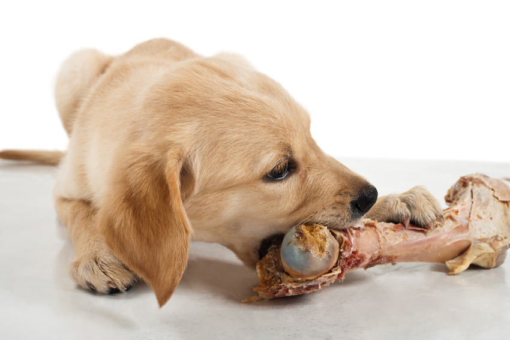
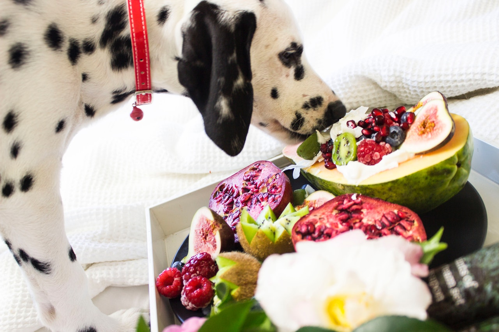

Hrana za pse
Zdrava ishrana ljubimaca je preduslov za njihov dug i srećan žvot. Iako vam se čini da vaš ljubimac rado jede sve što mu date, imajte u vidu da nepravilna ishrana u gotovo svim slučajevima dovodi do ozbiljnih zdravstvenih poremećaja. Gojaznost, problemi sa digestivnim traktom, kostima i drugim unutrašnjim organima samo su neki od problema sa kojima se psi suočavaju ako hrana za pse nije odgovarajuća. Zbog toga je pravilna ishrana pasa veoma važna. Pre svega treba da ustanovite potrebe vašeg psa, zavisno od njegove starosti, veličine i zdravstvenog stanja. U ovome vam može pomoći vaš veterinar. Time što ćete izabrati kvalitetnu hranu za pse i pažljivo odrediti kada i koliko treba da hranite ljubimca, osiguraćete mu duži i zdraviji život.
Domaća hrana za pse
„Domaća kuhinja” ne podrazumeva otpatke od porodičnog ručka, već zdravu hranu pripremljenu specijalno za ljubimca, od svežih kupljenih namirnica. Ovaj način ishrane je po mnogim odgajivačima i vlasnicima kvalitetniji. Međutim, treba znati da je ishrana hranom spremljenom u domaćoj radinosti komplikovanija i teža za vlasnika, jer traži dosta vremena i posvećenosti. Psima su potrebni proteini, masti, ugljeni hidrati, vitamini i minerali. Ovi hranjivi sastojci moraju biti uravnoteženi u hrani koju im dajete, tj. moraju biti zastupljeni u pravilnim proporcijama. Količina potrebnih sastojaka varira, zavisno od veličine, uzrasta, kondicionog i zdravstvenog stanja psa. Na primer, štenetu je potrebno više proteina nego odraslom psu. Dakle, da biste psa hranili namirnicama koje sami pripremite, potrebno je da poznajete njegove potrebe, te da se u hrani koju spremite nalaze svi hranjivi sastojci koji su mu neophodni i to u pravilnim proporcijama. Često se dešava da u ručno spremljenoj hrani nema dovoljno određenih vitamina i minerala, pa je potrebno u hranu stavljati vitaminsko-mineralnu dopunu ishrani. Nekoliko sugestija pre nego što se odlučite za domaću kuhinju:
- Priprema zdrave hrane za pse zahteva vreme, posvećenost i znanje o nutritivnim potrebama pasa, a može biti i skuplja od industrijske hrane.
- Ručno spremljenoj hrani morate dodavati vitaminsko-mineralne i druge dodatke u tačno određenim količinama, kako bi svi hranjivi sastojci bili uravnoteženi.
- Znanje o ishrani pasa se širi i menja iz dana u dan. Ono što smo smatrali uravnoteženom ishranom pre 5 godina, ne mora biti tako po današnjim standardima. Ukoliko odlučite da sami spremate hranu svom ljubimcu, morate da budete u toku sa novim stručnim informacijama o ishrani pasa.
- Ukoliko je domaća hrana nepravilno izbalansirana, bez obzira na to što je “zdrava i prirodna” može biti lošiji izbor za vašeg ljubimca od industrijske hrane.
- Domaća hrana je kvarljivija od industrijske. Da biste izbegli kvarenje namirnica i bolesti izazvane njihovim korišćenjem, morate biti pažljivi pri kuvanju i skladištenju.
- Jednom kada se ljubimac navikne na domaću hranu (koja je svakako ukusnija), biće ga teže vratiti ishrani industrijskom hranom.
- Ukoliko menjate način ishrane, sa industrijske hrane na domaću – obavezno to učinite postepeno, da biste sprečili probleme sa sistemom za varenje.
- Imajte u vidu da najbolja hrana na svetu neće poboljšati zdravlje Vašeg ljubimca ukoliko mu ne pružate dovoljno fizičke aktivnosti.
Industrijska hrana za pse
Osnovna prednost gotove industrijske hrane koju možete nabaviti u pet šopovima je u tome što je kompletna i izbalansirana. Sadrži sve hranjive sastojke potrebne za pravilan razvoj psa, kombinovane prema veličini, starosti, nivou aktivnosti i zdravstvenom stanju životinje. Treba imati u vidu da je Premium hrana poznatih proizvođača proizvedena na osnovu istraživanja nutricionista i uz podršku svakodnevnog iskustva odgajivača. Pri proizvodnji ove hrane, vodi se računa i o higijeni zuba i usne duplje, imunom sistemu psa, koži, krznu, varenju, kostima i zglobovima itd. Zato je za vlasnika koji nije zainteresovan da uloži vreme, trud i posvećenost u ishranu svog ljubimca, možda bolje da taj posao poveri proverenim i poznatim proizvođačima hrane za pse. Birajte Premium hranu! Kada je u pitanju gotova industrijska hrana – osnovno pravilo je “koliko para, toliko muzike”. Važno je da znate da postoje dva tipa hrane za pse – ekonomična hrana i Premium. Razlika između ova dva je u kvalitetu sastojaka. Ekonomična hrana za pse je jeftinija, a razlog za to je činjenica da sadrži jeftinije sastojke slabijeg kvaliteta i niže hranjive vrednosti – uglavnom sporedne proizvode nepodobne za ljudsku upotrebu (sporedne proizvode industrije mesa, otpatke od klanične industrije, eutanazirane životinje), a osnovni sastojci su im soja, pirinač ili kukuruz. Obično je namenjena lokalnom tržištu. Nasuprot ovome, Premium hrana sadrži kvalitetnije hranjive sastojke (osnovni sastojci su meso ili riba).

Metode ishrane pasa
Starost, veličina i navike psa igraju važnu ulogu u odluci koliko često ćete ga hraniti. Generalno postoje dve metode ishrane – slobodna i obročna ishrana. Slobodna ishrana. Mnogi ljudi biraju da drže pseću činiju uvek punu. To omogućava psu da jede kad on želi i i koliko on želi. Iako je veoma lagan i ne zahteva puno vremena i planiranja, ovaj način hranjenja nije preporučljiv. Time što stalno dopunjavate činiju vašeg ljubimca, niste u mogućnosti da kontrolišete količinu hrane koju on unosi u svoj organizam što vrlo često vodi u gojaznost. Ukoliko se ipak odlučite za ovaj način ishrane, preporuka je da svakog jutra činiju napunite sa određenom dnevnom količinom hrane i da bez obzira na to kada se činija isprazni, ne dodajete novu hranu do narednog jutra. Obročna ishrana. Preporučeni metod ishrane vašeg kućnog ljubimca je da čitavu dnevnu količinu hrane podelite u nekoliko manjih obroka, zavisno od njegove starosti i veličine. Ukoliko pas ne pojede hranu odmah, trebate je skloniti u roku od oko 20 minuta i ne nuditi mu hranu sve do sledećeg obroka. Na taj način ljubimac će shvatiti da treba da jede onda kada mu je hrana ponuđena, što vam može pomoći u praćenju njegovog apetita i kontrolisanju ishrane. Ukoliko primetite da pas konstantno odbija hranu, pokušajte da promenite vrstu hrane, a ako ni to ne reši problem, konsultujte veterinara.
Koliko obroka treba mom štenetu?
Štenci ispod 3 meseca starosti treba da dobijaju 4 obroka dnevno. Pročitajte na pakovanju hrane koju ste kupili koju količinu treba da date svom štenetu, i podelite je na 4 dela. Ukoliko štene odbije obrok, nemojte kasnije dodavati hranu. Svaki obrok mora da sadrži ¼ ukupne količine hrane za taj dan. Štence starosti 3 do 6 meseci treba hraniti 3 puta na dan. Imajte na umu da kako štene raste i dobija na težini, njegove potrebe u količini hrane se povećavaju. Nemojte zaboraviti da pogledate etiketu sa preporukama proizvođača o dnevnoj količini hrane za Vaše štene. Psi starosti 6 meseci do godinu dana treba da dobijaju 2 obroka dnevno, a nakon proslave prvog rođendana, možete polako početi da uspostavljate šemu ishrane za odrasle pse. Nekim psima odgovara da imaju jedan obrok dnevno, međutim obično se preporučuju dva obroka dnevno do kraja perioda rasta, pa čak i kasnije ukoliko je moguće. Ovo je naročito važno za velike i najveće rase pasa, koje imaju manji kapacitet sistema za varenje, pa unošenje odjednom velike količine hrane, može dovesti do zdravstvenih problema.
Za porodice koje među svojim članovima imaju više pasa, obročna ishrana je imperativ. Možda ćete čak morati da hranite životinje u zasebnim sobama (ukoliko se budu svađale oko hrane, ili budu jele iz obe posude). Tako pratite apetit svakog psa, sprečavate da pas pojede veću količinu hrane od propisane i reagujete ukoliko se pojave problemi sa ishranom. Zapamtite da psima odgovara red i rutina, zato odredite šemu hranjenja na samom početku zajedničkog život sa vašim četvoronožnim prijateljem i nemojte je menjati.